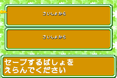

Sylvanian Families 4 - Meguru Kisetsu no Tapestry (Japan)
EEPROM 64K gbakit Built-In 📺 Joybus
Cartridge Identity
- Game Code
A4LJ(FamilyA4L)- Header Title
SYLVANIA4- Maker / Revision
E5/ rev0- ROM Size
- 8.0 MiB (8,388,608 B)
- Save Media
EEPROM 64K- SHA-256
cd67965b69e032e7450d6316a3b0069b964cafbb123c23374a42716c8b3e17ee
Screenshots

Link Cable & Multiplayer Communications
This title contains detected communication capabilities: 📺 Joybus.
Detailed protocol specifications, SIO registers, Joybus commands, and MultiBoot sequences are documented in the Link & Multiplayer Reference.
- GameCube Joybus
- Register literal
REG_JOYCNT(0x04000140) at offset0x5ed540 - GameCube Joybus
- Register literal
REG_JOYCNT(0x04000140) at offset0x6baffc
Battery Save Support in gbakit
Built-in definition (A4LJ)
gbakit save verify A4LJ save.sav
gbakit save decode A4LJ save.sav
gbakit save fix A4LJ damaged.sav -o repaired.savText, Fonts & Scene Data
- Primary Text Encoding
- 16-bit / UTF-16LE text (
4ASCII strings ·4Shift-JIS runs) - Font & VWF Indicators
- VWF Width Table 1bpp Font · BIOS SWIs: BitUnPack
0x10:4· LZ770x11/12:9· Huffman0x13:4· RLE0x14/15:9 - Scene & Packaging
13ROM pointer tables (≥32 entries,1≥200) ·12relativeu32TOCs ·309OAM metasprite hits
Hardware MMIO Subsystems
ppu_display0x80191e8